08.31.2007 21:03
The no internet at home experiment
I went and cancelled my home DSL starting this morning. I was paying
about $70 for the combined phone/DSL charges. Anyone have any thoughts
about the cell phone based systems from Sprint, Verizon, and T-Mobile?
08.31.2007 19:23
AGU 07 Magnetics of Sediments Session
This session looks pretty good. Too bad I don't have anything new to
add.
Enviromagnetic Fingerprints Recovered From Modern Sediments (GP06) . Modern sediments are valuable enviromagnetic archives. The session will focus on the ability of enviromagnetic parameters (e.g. low field susceptibility, frequency-dependent susceptibility, anhysteretic remanent susceptibility, bivariate ratios, bivariate plots) to differentiate sedimentary environments. Environmental magnetism is able to characterize processes in modern fluvial, deltaic, lacustrine and marine environments, as well as in modern soils. Case studies concerning aquatic systems are particularly welcomed. Presentations on the modified magnetic signatures recorded in ecosystems under natural and/or anthropogenic pressure are strongly encouraged. Calibration of sediments, e.g. by magnetic susceptibility, and correlation with geochemical and/or geoecological data are also topics of interest. . Convener: Sorin-Corneliu Radan Co-Convener: Ann M. Hirt . We will have invited talks given by: . Christoph Geiss (Trinity College, USA), Kenneth Kodama (Lehigh University, USA), Barbara Maher (Lancaster University, United Kingdom), Daniel Rey (Universidad de Vigo, Spain), Andrew Roberts (University of Southampton, United Kingdom).
08.30.2007 18:16
dods and hdf support in fink gdal
Rob B. gave me a report that gdal in fink is missing hdf supprt.
Strange, but I am not sure what it is missing.
% gdal_translate > formats-fink % /Library/Frameworks/GDAL.framework/Versions/1.4/Programs/gdal_translate > formats-chaos % diff formats-fink formats-chaos 15a16,17 > FITS: Flexible Image Transport System > HDF4Image: HDF4 Dataset 27d28 < FITS: Flexible Image Transport System 30a32 > PCRaster: PCRaster Raster File 31a34 > Terragen: Terragen heightfield 41a45 > JPEG2000: JPEG-2000 part 1 (ISO/IEC 15444-1)Anyone know what I am missing in the config? In the process, I noticed that the dods support was not working. I should have that working in the next revision of the gdal package.
08.30.2007 09:47
NOAA press release on whale tagging
SCIENTISTS
RECORD FIRST "MEGAPCLICKS" FROM FEEDING HUMPBACK WHALES IN NOAA'S
STELLWAGEN BANK NATIONAL MARINE SANCTUARY
'Megapclicks': acoustic click trains and buzzes produced during night-time foraging of humpback whales (Megaptera novaeangliae) [biology letters/royalsoc.ac.uk]
Alison K. Stimpert1 David N. Wiley, Whitlow W.L. Au, Mark P. Johnson, Roland Arsenault
Images from NOAA:
August 29, 2007 - For the first time, researchers have recorded "megapclicks" - a series of clicks and buzzes from humpback whales apparently associated with nighttime feeding behaviors - in and around NOAA's Stellwagen Bank National Marine Sanctuary. As detailed in the most recent issue of the Royal Society journal Biology Letters, this study offers the first documentation that baleen whales produce this type of sound, normally associated with toothed whales and echolocation.
'Megapclicks': acoustic click trains and buzzes produced during night-time foraging of humpback whales (Megaptera novaeangliae) [biology letters/royalsoc.ac.uk]
Alison K. Stimpert1 David N. Wiley, Whitlow W.L. Au, Mark P. Johnson, Roland Arsenault
Abstract - Humpback whales (Megaptera novaeangliae) exhibit a variety of foraging behaviours, but neither they nor any baleen whale are known to produce broadband clicks in association with feeding, as do many odontocetes. We recorded underwater behaviour of humpback whales in a northwest Atlantic feeding area using suction-cup attached, multi-sensor, acoustic tags (DTAGs). Here we describe the first recordings of click production associated with underwater lunges from baleen whales. Recordings of over 34000 'megapclicks' from two whales indicated relatively low received levels at the tag (between 143 and 154dB re 1microPa pp), most energy below 2kHz, and interclick intervals often decreasing towards the end of click trains to form a buzz. All clicks were recorded during night-time hours. Sharp body rolls also occurred at the end of click bouts containing buzzes, suggesting feeding events. This acoustic behaviour seems to form part of a night-time feeding tactic for humpbacks and also expands the known acoustic repertoire of baleen whales in general.
Images from NOAA:
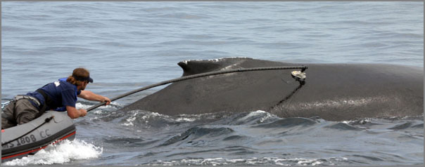
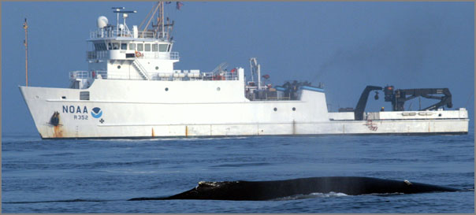
08.29.2007 21:58
jing for movie capture on mac and windows
Finally we have a movie capture from the screen tool that works on the
mac (and windows probably works fine too)...
jing
It doesn't even give me a kernal panic like another program did. The UI is a little strange with the sun like icon it put in the top right corner of my string. If it works, it works.
jing
It doesn't even give me a kernal panic like another program did. The UI is a little strange with the sun like icon it put in the top right corner of my string. If it works, it works.
08.29.2007 21:21
New Castle BBQ
This evening, Alice, Lynn, Michelle/Trooper, Val and I went to a BBQ
out at the New Castle Coast Guard station. Awesome location. Trooper
stole the show...
The new UNH pier is coming along, but it is strange to see how much short this one is compared to the old USCG pier that it replaces.
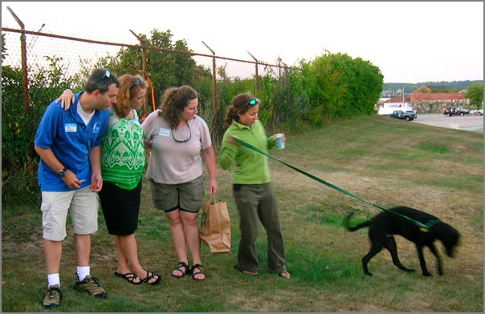
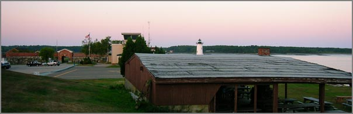
The new UNH pier is coming along, but it is strange to see how much short this one is compared to the old USCG pier that it replaces.
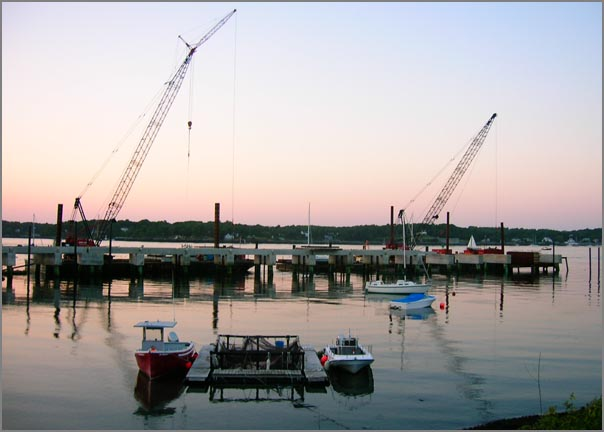
08.28.2007 19:17
Garden update
The garden is doing pretty well. This evening I made my own pasta
sauce that was made mostly from things from my garden. Here is the
current crop that I got today. The squash, corn, and cucumbers are
donation from the neighbors (and really good stuff!) The beats aren't
quite the shape I am used to seeing in the store. The carrot looks
funny, but yum!
Some of the sunflowers are doing quite well.
Some of the sunflowers are doing quite well.
08.28.2007 11:10
External sensors to verify AIS ship data (e.g. dimensions)
AIS is notorious for having ships that broadcast incorrect data. There is
even a group that got a publication out of this:
I imagine that there are other sensors available in locks and other tight areas that could do the same for width. For IMO number, a webcam can capture a picture of the ships IMO number and a human can quickly verify that it matches the AIS if a simple display showing both is available. Then if we have an upward looking sonar on the bottom, we could also check the draft. NOAA uses bottom mounted ADCP's to look at currents. They could also look for ships passing over. An alternative is to use computer vision to look at the lines on the side of the ship showing the load level, but that might be much less reliable.
The minimum keyboard displays are difficult to use and this could be a gentle way to let the mariner know that he has some values that need to be updated.
A. Harati-Mokhtari, A. Wall, P. Brooks, J. Wang, J., "Automatic Identification System (AIS): Data Reliability and Human Error Implications," The Journal of Navigation, vol. 60:3, pp. 373-389, 2007.A while back, I wanted to setup an AIS receiver with a webcam and trigger the web camera off of the AIS receive position. Then I could automatically start building a database of ship images. Convenient to have the ship telling you when it is in the field of view of the camera. Then I was looking at the sensors available in the NOAA PORTS system and realized that there is a similar idea available. A few bridges have been outfitted with airgap sensors. If we combine high rate air gap measurements with the GPS from the AIS broadcasts, we can calculate the length of the ship. We can then check the length of the ship (Dimensions A+B in AIS Msg 5) to see if it is within tolerances to what the airgap sensor seas. Then an alert can be sent to a VTS operator who can inform the ship that they need to correct the values in their GPS.
I imagine that there are other sensors available in locks and other tight areas that could do the same for width. For IMO number, a webcam can capture a picture of the ships IMO number and a human can quickly verify that it matches the AIS if a simple display showing both is available. Then if we have an upward looking sonar on the bottom, we could also check the draft. NOAA uses bottom mounted ADCP's to look at currents. They could also look for ships passing over. An alternative is to use computer vision to look at the lines on the side of the ship showing the load level, but that might be much less reliable.
The minimum keyboard displays are difficult to use and this could be a gentle way to let the mariner know that he has some values that need to be updated.
08.28.2007 10:50
CCOM web site people page now has pubs
Yesterday I was talking to Briana about the new look of the CCOM
publication section which is a huge improvement of the previous way.
The old way had each publication only once in a big list. That made
it hard to say "browse all papers by Colin Ware." Her new style is to
have each person in a big web page with all the pubs that include that
person.
My next suggestion is to have a publications section under each persons bio. I thought I was asking for too much, but this morning surprised me with an IM to go look at the people page and there it is. The default look is without the pubs, but if you click "Publications by Schwehr," it pops up a list of my pubs that are in the CCOM database. Sweet!
My next suggestion is to have a publications section under each persons bio. I thought I was asking for too much, but this morning surprised me with an IM to go look at the people page and there it is. The default look is without the pubs, but if you click "Publications by Schwehr," it pops up a list of my pubs that are in the CCOM database. Sweet!
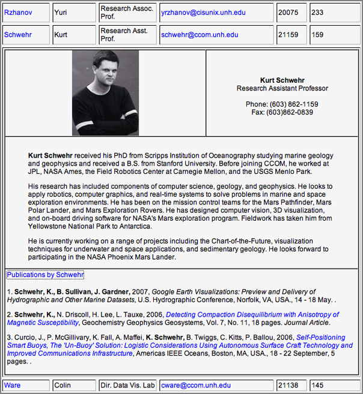
08.28.2007 10:06
Paper on AIS for oil spill applications
Phil and I put together a short paper on our thoughts about AIS for
Oil Spill issues. Phil will be giving this as a talk at MTS/Oceans07
the first week of October.
[PDF] Schwehr, K.D., McGillivary, P.A., Marine Ship Automatic Identification System (AIS) for Enhanced Coastal Security Capabilities: An Oil Spill Tracking Application, Oceans07 MTS/IEEE, Vancouver, B.C. 29 Sept - 4 Oct 2007. Abstract:
[PDF] Schwehr, K.D., McGillivary, P.A., Marine Ship Automatic Identification System (AIS) for Enhanced Coastal Security Capabilities: An Oil Spill Tracking Application, Oceans07 MTS/IEEE, Vancouver, B.C. 29 Sept - 4 Oct 2007. Abstract:
National and international trade via shipping is already significant, and expected to continue increasing rapidly over the next decade. Both more ships and larger ships will contribute to this trade, including ships from countries with less rigorous shipping maintenance and inspection standards than the United States, and less strict pollution monitoring regulations. Changes in ship traffic management protocols have been implemented in recent years in the U.S. to minimize damage to coastlines, particularly near sensitive or protected marine environments. For example, to reduce risk to coastal resources off central California, shipping lanes for larger vessels were moved further offshore to allow for additional response time in case of accidents before such vessels might drift into coastal areas. Similarly, ships are now routed via specific approach channels when entering Boston Harbor to reduce impacts within adjacent National Marine Sanctuary resources. Several recent high profile cases have occurred where 'mystery' oil spills were found near shipping channels, but no vessel could be readily identified as their source. These incidents lead to extensive and expensive efforts to attempt to identify the ships responsible. As time passes in responding to these incidents, the likelihood of confirming the identity of the ships diminishes. Unfortunately, reports of vessels engaging in illegal oily waste discharge to reduce fees for offloading the waste in port are ongoing. We here discuss use of improved capabilities of near-continuous real-time position location monitoring of shipping traffic using marine Automatic Identification Systems (AIS) for ships that would facilitate identification of ships responsible for illegal oily waste discharge. The next phase of the National AIS, N-AIS Increment 2, can supply additional spatial coverage not currently included in the N-AIS Increment 1, which can provide an enhanced capability for monitoring shipping and improving management of coastal ship traffic and response to pollution incidents. These methods will not only improve response time, but reduce cost of response as well.As always, my pubs are available online: pubs/papers/reports/etc
08.27.2007 18:12
Geologist - Uncyclopedia
Geologist as
defined in the Uncyclopedia. If you are a geologist or know us
geologists well, this is laugh out loud stuff.
08.27.2007 16:28
apache2 and libapache2-mod-python-py25 in fink
I was having problems with mod-python in fink. After rebuilding
apache2, the bus errors disappeared. I think this comes from me
building apache2 a while back and then compiled mod python. I did a
fink rebuild of apache2 and now all is well. When it was failing,
life was not fun. After doing an apache2ctl restart, it went
into an infinite loop trying to start apache2. BTW, Mac OSX sticks
crash dumps in /Library/Logs/CrashReporter/apache2.crash.log
The proceedure:
The proceedure:
fink install apache2 fink install libapache2-mod-python-py25 sudo a2enmod python2.5 sudo emacs /sw/etc/apache2/apache2.confNow in the apache2.conf file, add this to the end just for testing:
<Location /mpinfo>
SetHandler mod_python
PythonInterpreter main_interpreter
PythonHandler mod_python.testhandler
</Location>
Now restart apache and give a look at the mod python info:
sudo apache2ctl restart open http://localhost/mpinfo
General information
Apache version | Apache/2.0.59 (Unix) mod_python/3.3.1 Python/2.5.1 |
Apache threaded MPM | Yes, maximum 25 threads / process |
Apache forked MPM | Yes, maximum 6 processes |
Apache server root | /sw/etc/apache2 |
Apache document root | /sw/var/www |
Apache error log | /sw/var/log/apache2/error.log (view last 100 lines) |
Python sys.version | 2.5.1 (r251:54863, May 11 2007, 07:21:53)
[GCC 4.0.1 (Apple Computer, Inc. build 5341)] |
Python sys.path | /sw/lib/python25.zip /sw/lib/python2.5 /sw/lib/python2.5/plat-darwin /sw/lib/python2.5/plat-mac /sw/lib/python2.5/plat-mac/lib-scriptpackages /sw/lib/python2.5/lib-tk /sw/lib/python2.5/lib-dynload /sw/lib/python2.5/site-packages /sw/lib/python2.5/site-packages/Numeric /sw/lib/python2.5/site-packages/PIL /sw/lib/python2.5/site-packages/ellipt2d /sw/lib/python2.5/site-packages/gtk-2.0 |
Python interpreter name | main_interpreter |
mod_python.publisher available | Yes |
mod_python.psp available | Yes |
08.27.2007 11:46
LNG Boston news articles
The Glaucester Daily Times has two articles this month on the LNG
terminals that are going in next to the Stellwagen Bank National
Marine Sanctuary (SBNMS):
August 10, Second company granted key permits for gas terminal, By Douglas A. Moser
August 13, LNG company funding whale detecton system, By Douglas Moser
August 10, Second company granted key permits for gas terminal, By Douglas A. Moser
Suez Energy North America received the last few state permits it needs to begin construction on its deepwater liquefied natural gas port proposed about 10 miles southeast of Gloucester, company executives said yesterday. . The project received a water quality certification from the state Department of Environmental Protection and coastal zone management consistency certification from the Massachusetts Coastal Zone Management Office. . Clay Harris, president and CEO of Suez North America, said in a statement that the company still plans to begin operations of its liquefied natural gas terminal by the end of 2009. ...
August 13, LNG company funding whale detecton system, By Douglas Moser
One of the companies building a liquefied natural gas terminal off Gloucester is paying for a new system that will help detect whales and avoid strikes by its massive tankers. . Environmentalists and marine biologists hope it could dramatically reduce the number of whales killed by vessel strikes. Two whales that washed up dead on Cape Ann shores this summer died as a result of being hit by large vessels, officials from the New England Aquarium determined. . Six buoys, which each have a microphone tied to it 50 feet below the surface and an antenna to transmit data and sound, surround the construction site of one liquefied natural gas terminal 13 miles southeast of Gloucester. Excelerate Energy LLC, based in The Woodlands, Texas, is building the Northeast Gateway Energy Bridge and paid for the whale monitoring system as part of a mitigation package the state ordered when approving the terminals. . The buoys will help monitor whales in the main shipping route from the LNG site to Boston. . "A company wanted to build these (LNG terminals) a mile away from a marine sanctuary, and we wanted to find ways to mitigate their impact," said Leila Hatch, a regional coordinator for marine bioacoustics with the National Oceanic and Atmospheric Administration. ...
08.24.2007 09:03
Saturn Vue Hybrid
Yesterday I drove a Saturn Vue Hybrid down to Groton, CT for a meeting
at the USCG RDC. I've driven a Prius before, but it was fun to tryout
a more SUV like hybrid. I drove 387 miles with about 95% of those
miles on the highway in traffic that was almost always going over 60
MPH. I ended up putting 12.39 Gal in the tank. So assuming
enterprise gave me a car with a full tank, the car got 31.2 MPG. Not
bad for an SUVish vehicle, but I was hoping for better gas mileage.
My old Saturn SL2 gets about the same for my around town driving.
08.22.2007 14:37
Hercules and Argus recover Doerri
Here are some images from Art T. that show the recovery of DOERRI by
Hercules and Argus in the Black Sea. The vehicle flooded, but the
pinger worked and they were able to find it.
The team is back on land and will be back in the states not too long from now. They are going to be telling some priceless sea stories for sure.
The team is back on land and will be back in the states not too long from now. They are going to be telling some priceless sea stories for sure.
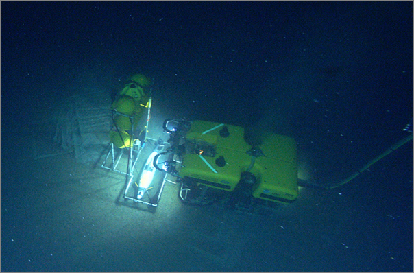
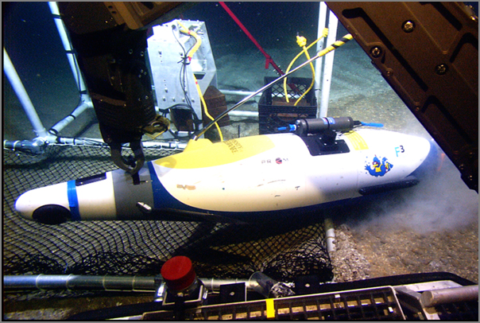
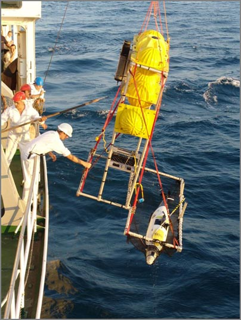
08.20.2007 11:32
How to check out a svn project from Eclipse
The initial task of checking out an existing project from svn for use
in Eclipse is a little overwhelming. I had to ask for help a couple
time to get to this point. Here is how I did it, but unless you are a
CCOM person, you will have to use a different svn tree. This is on a
Mac running 10.4 with eclipse 3.3.0 configured how I discribed last
month.
First, we need to have python 2.5 and pylint installed. Use fink:
First, we need to have python 2.5 and pylint installed. Use fink:
fink selfupdate && fink install pylint-py25-binNow configure pydev:
Eclipse - Preferences
Pydev
Interpreter - Python
"New..." to the right of Python interpreters
Harddisk /sw/bin/python2.5
Pylint
check use pylint
location of pylint (lint.py)
/sw/bin/pylint
OK... takes about 30 seconds
Now you need to open the repository for browsing:
Window - Open Perspective
SVN Repository Exploring
Right click in the SVN Repository
New - Repository Location
Url: https://cowfish.unh.edu/projects/schwehr/trunk/src/noaadata/
Now you should see your repository. Check it out.
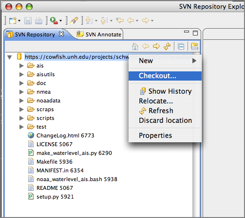
Right click on the url in "SVN Repository..."
Checkout
Wizard
pydev
pydev project
project name: noaadata
Choose project type: python 2.5
Uncheck create default src
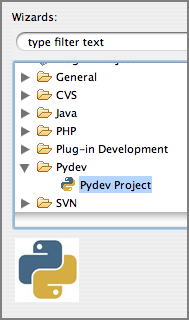
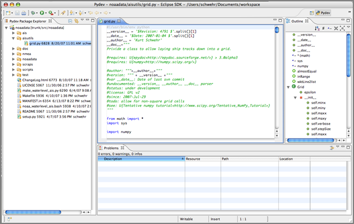
08.20.2007 10:55
Black Sea DOERRI article
Scientists Take Underwater Robot On Black Sea Expedition [sciencedaily.com]
Science Daily - Using a novel underwater robot, University of Delaware marine scientists will help reveal the mysteries of the Black Sea's geology and maritime history, including ages-old shipwrecks, during an international expedition that is now underway. . The Institute for Exploration and the Institute for Archaeological Oceanography at the University of Rhode Island's Graduate School of Oceanography are leading the mission, which will conduct geological and archaeological research in the Aegean and Black Seas--waterways that have served as major trade routes for centuries. ... Note: This story has been adapted from a news release issued by University of Delaware.
08.20.2007 09:53
trac update for fink
Charles Lepple and I have worked together to get an update to trac in
fink. I picked up the maintainership to clearsilver-py to get it to
python 2.5. That I did, but I still need to fix up the package to see
if I can get it to allow python 2.4 and 2.5 variants to be installed
at the same time. Charles did the trac update to 0.10.4 and added the
python 2.5 variant and now has it depending on pysqlite2-py. That
means trac will be force into using an sqlite3 database rather than
the option of sqlite2 or sqlite3 depending on if you have pysqlite2-py
installed or not. I think this will reduce confusion in the long run.
Plus sqlite3 is faster and smaller than sqlite2. To update your
database, do this:
$ mv trac.db trac2.db $ sqlite trac2.db .dump | sqlite3 trac.dband you will be back in business. For some of my databases, the file size dropped to about 1/2 the original size.
08.17.2007 14:27
Black Sea update
We finally heard back from the Black Sea via Roland. Doerri and the
AUV team are all on board the Alliance. The Alliance provided the
Flamingo pumps and the Flamingo has been towed back to Sevastopol.
Apparently, there was trouble with the shaft gasket on the Flamingo.
Art T. kindly instant messaged me before they had to leave the
Flamingo. The Alliance is back to regular ROV operations and the AUV
is being packed up for return state side.
08.17.2007 08:40
gCaptain on when radar is out
Radar
is out? Stop cursing and grab a plotting sheet.. He suggests
plotting AIS contacts with a grease pencil. Why not have an AIS
charting system that can plot contacts on the chart. Then spend most
of your time "looking out the windows". Most of these ships have very
few people on the bridge.
However, learning to use a grease pencil and plotting is a very valuable skill even in the computer age.
However, learning to use a grease pencil and plotting is a very valuable skill even in the computer age.
08.17.2007 08:36
MS Virtual Earth for Emergency Response
Mobile
Tactical Collaboration System(TM) for Emergency First Response and
Alert Notification
... Our friends at Ordia Solutions are making news around just such an application, their Virtual Earth powered Mobile Tactical Collaboration System. The system is a map driven solution that allows collaboration between multi-jurisdictional and multi-disciplinary first responders such as police, fire and rescue, and other emergency managers to visualize and analyze critical situations and to coordinate command and control. MTCS integrates Virtual Earth maps with collaborative software tools, advanced GIS tools and voice-over-IP for real-time incident reporting, communications, the sharing of photos and videos, and map annotations through shared workspaces. Like most Virtual Earth applications, it is delivered via a web browser and MTCS runs on mobile wireless information devices mounted inside emergency vehicles. Screenshot of the application below. ...
08.16.2007 18:12
GLUT is not GLUT is not GLUT
Ouch... I am trying to track down the source to GLUT that Roland is
using for some GeoZui development. I had thought until now that GLUT
was GLUT and FreeGLUT was pretty much the same thing. Apparently not.
He has references to these functions: glutStylusButtonFunc glutStylusMotionFunc, glutCursorButtonFunc, glutCursorMotionFunc, glutEraserButtonFunc, and glutEraserMotionFunc. I can't seem to find them anywhere. In the GLUT that he has they look like this:
He has references to these functions: glutStylusButtonFunc glutStylusMotionFunc, glutCursorButtonFunc, glutCursorMotionFunc, glutEraserButtonFunc, and glutEraserMotionFunc. I can't seem to find them anywhere. In the GLUT that he has they look like this:
GLUTAPI void APIENTRY glutTabletMotionFunc(void (GLUTCALLBACK *func)(int x, int y)); GLUTAPI void APIENTRY glutTabletButtonFunc(void (GLUTCALLBACK *func)(int button, int state, int x, int y)); GLUTAPI void APIENTRY glutStylusMotionFunc(void (GLUTCALLBACK *func)(int x, int y, int p)); GLUTAPI void APIENTRY glutStylusButtonFunc(void (GLUTCALLBACK *func)(int button, int state, int x, int y)); GLUTAPI void APIENTRY glutEraserMotionFunc(void (GLUTCALLBACK *func)(int x, int y, int p)); GLUTAPI void APIENTRY glutEraserButtonFunc(void (GLUTCALLBACK *func)(int button, int state, int x, int y)); GLUTAPI void APIENTRY glutCursorMotionFunc(void (GLUTCALLBACK *func)(int x, int y, int p)); GLUTAPI void APIENTRY glutCursorButtonFunc(void (GLUTCALLBACK *func)(int button, int state, int x, int y));That clearly is not freeGLUT as it has FGAPIENTRY instead of APIENTRY and spits the headers out with glut.h including two other headers.
08.16.2007 10:57
ogle earth links on Vesseltracker and GeoWeb 2007 presentations
Ogle Earth has a links post with some good content: Links: Vesseltracker, earthquake, Vint Cerf on the geoweb:
Jim Case pointed out that there are a million more Google Earth ocean related sites and files on this site. It was good before, but now it is just crazy. I've got one link on there at the bottom for "Whale Tracking" in the "Atypical sites" category. http://www.justmagic.com/GM-GE.html
Jim Case pointed out that there are a million more Google Earth ocean related sites and files on this site. It was good before, but now it is just crazy. I've got one link on there at the bottom for "Whale Tracking" in the "Atypical sites" category. http://www.justmagic.com/GM-GE.html
08.15.2007 14:22
Human error in AIS data
To quote someone who said this in jest...
Automatic Identification System (AIS): Data Reliability and Human Error Implications by Abbas Harati-Mokhtaria, Alan Walla, Philip Brooksa and Jin Wanga.
You mean, there are errors in AIS data!??? OH NO!We've been struggling for untold hours to deal with bad data in AIS streams. Here is a article by another group of researchers about the problems found in AIS data.
Automatic Identification System (AIS): Data Reliability and Human Error Implications by Abbas Harati-Mokhtaria, Alan Walla, Philip Brooksa and Jin Wanga.
Abstract This paper examines the recent introduction of the AIS to the ship's bridge and its potential impact on the safety of marine navigation. Research has shown that 80 to 85% of all recorded maritime accidents are directly due to human error or associated with human error. Safety is an important element of marine navigation and many people at different levels are involved in its management. The safe and efficient performance of joint systems, is heavily dependent upon how functions are allocated between the human and the machine. This paper investigates different regulations, supervision for proper use, training, and management of AIS users. It uses previous research and three separate AIS studies to identify problems. The potential of the AIS to cause problems is analysed. The classic human factor "Swiss Cheese" Model of system failure has been modified for the AIS to investigate a possible accident trajectory. The paper then concludes with recommendations and suggestions for improvements and further work.
08.15.2007 14:17
AIS Class B article in Professional Mariner
Ben Ellison (of panbo.com has an article in Professional Mariner:
Class B AIS is coming, growing pains included (Issue Date: Professional Mariner #104 - June/July 2007, Posted On: 5/14/2007)
"All AIS is good; and Class B is going to give people a better picture of what's going on out there, no question about it, but my problem with it is that update rate of just once every 30 seconds," said former tanker captain and current Penobscot Bay pilot Capt. Skip Strong. And he's just one of several AIS experts who say that Class B transponders, the just-about-to-arrive third phase of the AIS marine safety revolution, will take some getting used to.
08.15.2007 09:37
skype to the black sea
I just used Skype for the first time... Roland gave me a tour of the
Flamingo out in the Black Sea. Kinda hard to top this as a first
Skype experience. Art held up a sign saying "Mac GeoZui" with a big
smiley face. I know, I know. I will try later today if I can get some
other tasks out of the way.
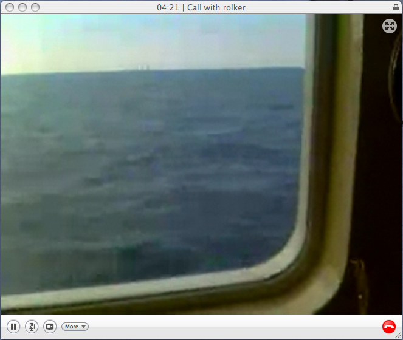
08.13.2007 20:40
Press coverage of Healy Arctic cruise
After the Russian flag on the pole stunt, there will probably be a lot
of press coverage of the CCOM/JHC Healy cruise to the Arctic. The
team is flying north tomorrow and the day after. The Chase Ocean
Engineering will be weirdly quiet the bit as the lab has the Black Sea
Cruise, the Arctic Cruise, and the GEBCO international students head
out tomorrow.
After Russia and Canada, U.S. ship headed for Arctic, By Deborah Zabarenko
... This is the third such U.S. Arctic mapping cruise -- others were in 2003 and 2004 -- and is not a response to a Russian mission this month to place a flag at the North Pole seabed, or a newly announced Canadian plan for an Arctic port, U.S. scientists said. . "This cruise was planned for three years and we've had the earlier cruises; this is part of a long and ongoing program, not at all a direct response," said Larry Mayer of the University of New Hampshire, who will be on the voyage. ...
08.13.2007 19:10
AIS in Google Maps
ship-position.kml
is a Google Earth file. As I've written before, certain types of
KML/KMZ files can be displayed in Google Maps. I still haven't had a
reason to play with the google or yahoo maps APIs. Maybe someday.
This URL will display a ship in the San Francisco area in Google Maps. It should be easy to add multiple ships to a kml. I still have not checked if google maps will respect the refresh settings in KML.
This URL will display a ship in the San Francisco area in Google Maps. It should be easy to add multiple ships to a kml. I still have not checked if google maps will respect the refresh settings in KML.
./ais_msg_1.py -d '!AIVDM,1,1,,A,15Mmkl0P03G?iwjEWG9ICgv606sd,0*3A,1183247946' -T kml-full > ship-position.kmlhttp://maps.google.com/maps?q=../attachments/2007-08/ship-position.kml
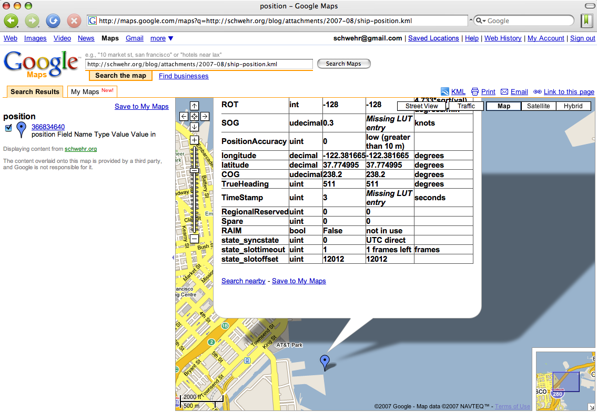
08.13.2007 15:57
NOAA COAST SURVEY CONTINUES SEA FLOOR MAPPING EXPEDITION IN THE ARCTIC
NOAA 2007-043
NOAA's Office of Coast Survey, in partnership with the University of New Hampshire's Joint Hydrographic Center and the National Science Foundation, will embark on a four-week cruise to map a portion of the Arctic sea floor starting Aug. 17. . This is the third expedition in a series of cruises aboard the U.S. Coast Guard Cutter Healy designed to map the sea floor on the northern Chukchi Cap. Scientists will explore this poorly known region to better understand its morphology and the potential for including this area within the United States' extended continental shelf under the United Nations Convention on Law of the Sea. . The data collected during this cruise will also provide valuable information for better understanding sea floor processes and fisheries habitat, as well as provide input into climate and circulation models that will help scientists predict future conditions in the Arctic. . Previous mapping cruises in this series were conducted in 2003 and 2004. . Healy is equipped with more than 4,200 square feet of scientific laboratory space and a multibeam echo sounder, the primary tool that is used to map the sea floor. The research has been funded through a NOAA grant award to the University of New Hampshire and will be headed by cruise chief scientist Larry Mayer at UNH with NOAA's Andy Armstrong serving as co-chief scientist. . The northern Chukchi Cap is an ice-covered region of the Arctic Ocean where little data about the sea floor is available. The cruise will primarily be mapping the 2,500 meter (about 8,250 foot) depth contour and the foot of the continental slope - the area where the continental margin transitions into the deep sea floor. . The Administration is currently seeking Senate consent to U.S. accession to the Law of the Sea Convention as a priority recommendation under the President's Ocean Action Plan. Accession would allow full implement of the rights afforded to convention parties to protect coastal and ocean resources. . Coastal states have sovereign rights over resources of the sea floor and subsurface of their continental shelves. Under the Law of the Sea, a country gets 200 nautical miles of continental shelf automatically, but may extend its shelf beyond 200 nautical miles if it meets certain geologic criteria. Under the Law of the Sea Convention, nations submit scientific data on their continental shelves to a technical body called the Commission on the Limits of the Continental Shelf. If a country's claim meets Commission criteria, it strengthens the legal certainty underlying the country's assertion of entitlement to the extended shelf. (The United States is seeking to become a party to the Convention in part to benefit from the legal certainty that comes with this mechanism.) . Additional research, coordinated through the National Science Foundation, includes the deployment of several Metocean ice-beacons/buoys for the National Ice Center to collect information on long-term ice drift, as well as the recovery, refurbishment and redeployment of two high-frequency acoustic recording packages used to record background acoustic noise. Scientist on the ship will conduct sea ice analysis and routine collection of observations of sea ice characteristics. . The partnership between NOAA's Center for Coastal and Ocean Mapping and the Joint Hydrographic Center at the University of New Hampshire in Durham, N.H., is intended to create a national center for expertise in ocean mapping and hydrographic sciences. The centers focus their activities on two major tasks. The first is an educational task to create a learning center that promotes and fosters the education of a new generation of hydrographers and ocean mapping scientists. The second is a research task that develops and evaluates a wide range of state-of-the-art hydrographic and ocean mapping technologies and applications. . The National Oceanic and Atmospheric Administration, an agency of the U.S. Commerce Department, is celebrating 200 years of science and service to the nation. From the establishment of the Survey of the Coast in 1807 by Thomas Jefferson to the formation of the Weather Bureau and the Commission of Fish and Fisheries in the 1870s, much of America's scientific heritage is rooted in NOAA. . NOAA is dedicated to enhancing economic security and national safety through the prediction and research of weather and climate-related events and information service delivery for transportation, and by providing environmental stewardship of our nation's coastal and marine resources. Through the emerging Global Earth Observation System of Systems (GEOSS), NOAA is working with its federal partners, more than 70 countries and the European Commission to develop a global monitoring network that is as integrated as the planet it observes, predicts and protects. . On the Web: . NOAA: http://www.noaa.gov . NOAA National Ocean Service: http://oceanservice.noaa.gov/ . NOAA Office of Coast Survey: http://chartmaker.ncd.noaa.gov/ . University of New Hampshire Joint Hydrographic Center: http://www.ccom-jhc.unh.edu/http://www.ccom-jhc.unh.edu/
08.13.2007 10:14
Black Sea cruise - Images by Roland
Roland is out in the Black Sea with Doerri. We've been watching some
of the cruise on our Internet 2 video feeds. Roland sent back a few
pictures that are not on that feed.
The Alliance as seen from the Flamingo. Notice the nice astro turf.
Where the cruise currently is located. Click for the original full sized image. I hacked the small one to work better a blog.
The Alliance as seen from the Flamingo. Notice the nice astro turf.
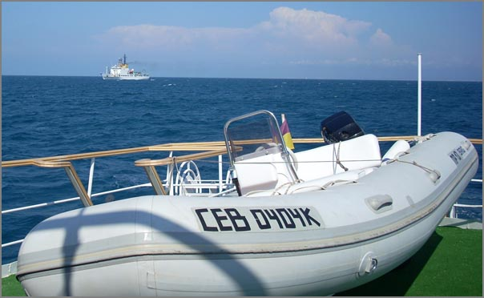
Where the cruise currently is located. Click for the original full sized image. I hacked the small one to work better a blog.
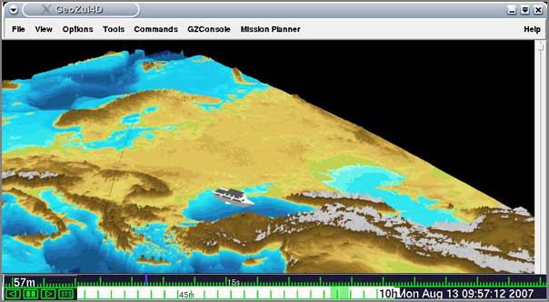
08.13.2007 09:27
Presolicitation Notice (NOAA) - AIS based Program to Monitor Vessels off U.S. East Coast
I got to this by putting 14972 into the quick search on this page: 14972.
http://www.fbo.gov/spg/DOC/NOAA/AGAMD/NFFK0000%2D7%2D14972/SynopsisP.html
A -- Developing an Automatic Identification System (AIS) - based Program to Monitor Vessels in Waters off the U.S. Eastern Seaboard
General Information
http://www.fbo.gov/spg/DOC/NOAA/AGAMD/NFFK0000%2D7%2D14972/SynopsisP.html
A -- Developing an Automatic Identification System (AIS) - based Program to Monitor Vessels in Waters off the U.S. Eastern Seaboard
General Information
Document Type: Presolicitation Notice Solicitation Number: NFFK0000-7-14972 Posted Date: Aug 10, 2007 Original Response Date: Aug 24, 2007 Current Response Date: Aug 24, 2007 Original Archive Date: Sep 08, 2007 Current Archive Date: Sep 08, 2007 Classification Code: A -- Research & Development Set Aside: Total Small Business Naics Code: <541710 -- Research and Development in the Physical, Engineering, and Life Sciences
- Department of Commerce, National Oceanic and Atmospheric Administration (NOAA), Acquisition and Grants Office, SSMC4 - Room 7601/OFA61 1305 East West Highway, 7th Floor, Silver Spring, MD, 20910, UNITED STATES
- NOAA intends to monitor vessel compliance with ship strike reduction measures vis a vis threatened marine mammals. Initially NOAA wishes to explore the feasability of doing so through remote sensing, specifically AIS and related technologies. Therefore, NOAA seeks to explore the feasibility of developing a unified network of receivers and centrally processed, parsed, stored, and relayed data. As such, this call for proposals is about assessing existing U.S. east coast AIS capabilities and to the extent deficiencies exist, assessing the feasibility of developing an U.S. east coast-wide AIS network. In addition, the contractor will prepare a draft plan for implementing such a system, identify any obstacles, identify the soft- and hard-ware and technical requirements, and assess the costs associated with creating such a system and implementing an AIS-based program. The p[eriod of performance for this initial phase shall not exceed one year. Evaluation using simplified acquisition procedures shall utilize technical approach, past performance and price. A time and materials order is contemplated. This is a simplified acquisition under the SAT.
- Donald Thompson, Contracting Officer, Phone 301-713-0820 x118, Fax 301-713-0806, Email don.thompson@noaa.gov
Address: Silver Sp Postal Code: 20910 Country: UNITED STATES
08.13.2007 09:24
AIS conference renamed to eNavigation
eNavigation2007:
http://www.enavigation.org/
This was AIS06 last year. The conference is Nov 13-14, 2007 in
Seattle. I am not sure if I am going this year or not. Attending last
year was a huge leg up for my AIS based research.
Last years presentations: http://www.rhppublishing.com/AIS06Presentations.html
"E-navigation is the harmonized creation, collection, integration, exchange and presentation of maritime information on board and ashore by electronic means to enhance berth-to-berth navigation and related services, for safety and security at sea and protection of the marine environment." - IMO's NAV subcommittee . This November, Pacific Maritime Magazine will present a conference intended to explore how Electronic Navigation and information technology can be applied in short sea shipping and waterborne commerce. . eNav 2007 will explore how information technology can be used for improved navigational safety, better governmental stewardship of the environment, more effective law enforcement and security and greater efficiency in the maritime links in national and global supply chains. . The target of the International Maritime Organization (IMO) is to develop the implementation strategy for e-Navigation by the end of 2008. As with our popular AIS conferences of which this is a natural outgrowth, eNav 2007 will give vessel operators and marine cargo terminal operators the opportunity to discuss information technology application with federal and international regulators and manufacturers in an interactive panel discussion format.
Last years presentations: http://www.rhppublishing.com/AIS06Presentations.html
08.12.2007 09:03
Garden update
Here is a quick update on the garden in photos. The tomatos are
producing, but have something that is killing of the leaves pretty
quickly. The mammoth sunflow is as tall as the bottom of the roof to
the garage. Sweet peas are pretty much done with all the heat.
The beans are doing quite well on the arch. I definitely should have planted more climbers.
The sunflowers in the back row are huge...
I think the chocolate sunflower is the best for color.
As the sunflowers start to bloom, they kind of look like a alien spoor thing.
And this is the perfect little sunflower bloom next to the garden gate.
The beans are doing quite well on the arch. I definitely should have planted more climbers.
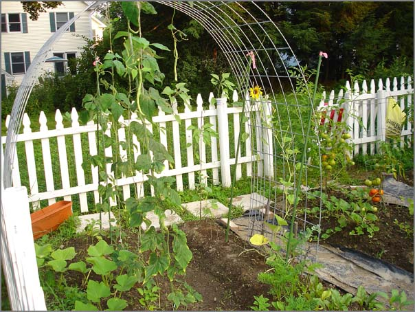
The sunflowers in the back row are huge...
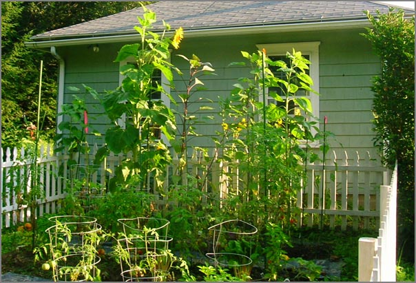
I think the chocolate sunflower is the best for color.
As the sunflowers start to bloom, they kind of look like a alien spoor thing.
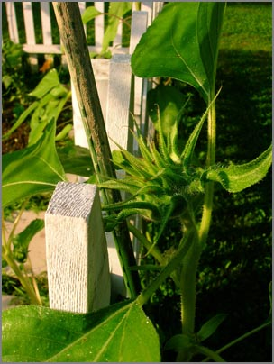
And this is the perfect little sunflower bloom next to the garden gate.
08.12.2007 08:33
JPL Image Processing Labs
In previous posts, I showed were I work when I am in Tucson. Here is
the other side of the fence back at JPL. This is the Digital Image
Animation Lab (DIAL). I tend to sit at workstations right behind the
camera. During the summer, this area is one of the summer student
work areas with 2-3 students at the Macs shown here.
Around the corner is a hallway with light boards mounted on the wall. Entering the lab through this hallway really sets the stage of switching from the Mall outside the building (with deer and such) to the other worlds that are seen through the image processing labs.
Kris does an awesome job of producing super high quality prints that adorn many parts of JPL. It is not uncommon to have 20-30 foot long plots laying on the floor being prepped for display.
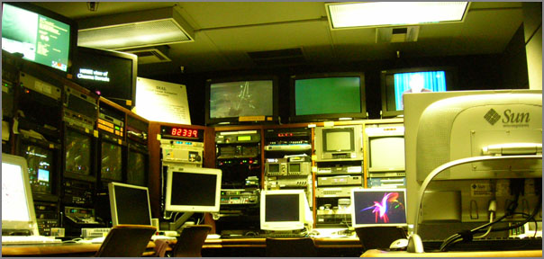
Around the corner is a hallway with light boards mounted on the wall. Entering the lab through this hallway really sets the stage of switching from the Mall outside the building (with deer and such) to the other worlds that are seen through the image processing labs.
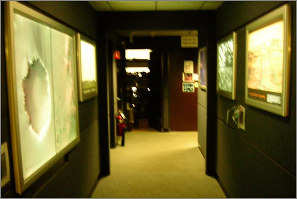
Kris does an awesome job of producing super high quality prints that adorn many parts of JPL. It is not uncommon to have 20-30 foot long plots laying on the floor being prepped for display.
08.10.2007 16:39
GCN covers Devon Island
The NASA Devon Island project made GCN: We, robots GCN
Insider | Before astronauts go back to the moon - or to Mars - robots
will scout the territory
08.10.2007 16:20
The history of ossimPlanet
I had the pleasure today of meeting Norman Vine who was visiting CCOM.
He pointed me to a recent email describing the history of ossimPlanet:
Re:
[OSSIM] ossimPlanet Release Date
I guess 'officially' the ossimPlanet project got started at the UMN Mapserver Users Meetingin Ottowa Sept 2004 where Mark and I met face to face for the first time and he also embraced the concept of producing an OGC Standards enabled Interactive Widget . I had been givings demos of a non internet enabled interactive globe for a year or so prior to that and Mark, Garrett and I had discussed the idea of using OSSIM as the 'base platform' before then but that is when we decided to "just do it". . At MUM the following year, June 2005, I gave a lightning talk about 'Planet' and how it had come to be and what could be accomplish using OGC standards. This was probably the first 'public exposure' for the project but IIRC we had working code before the first of the year in the public CVS and I am sure we had given other demos before then . As the lead OSSIM developer Garrett has been leading the development effort since the winter of 05 or so
08.10.2007 11:21
noaadata 0.29 released
I just released noaadata 0.29 that has a number of new features that
support an upcoming paper.
0.29 - 2007-Aug-10
http://vislab-ccom.unh.edu/~schwehr/software/noaadata/
- Added ship traffic gridding using postgis. grid.py and ais_pg_grid.py
- Transit summary support for SBNMS work
- ais_pg_create_transit_table.py and ais_pg_transitlines_noMakeLine for building the tpath table used for summary reports
08.10.2007 10:06
Bluetooth tide gauge
Bluetooth Tide Gauge [ hydro internation product news ]
... In the world of dredging and hydrographic survey the tide gauge has largely been replaced by RTK GPS, giving high quality tidal Z values local to the point of measurement, however, the relative low cost and reliable logging tide gauge is nearly always deployed as a backup device and also provides a gross check on the GPS values. For Port and Harbour operations reliability and cost are the main parameters of interest, an ideal scenario would be an RTK antenna deployed on a buoy and to send real time height values back to the port control via telemetry. In reality the cost of an RTK rover unit with its associated base station and telemetry do not firmly represent value when compared with a more conventional tide gauge. The vulnerability of the rover system together with the fallibility of radio telemetry are also a potential weakness when the system is required to provide data even during storm and bad weather conditions. ...
08.10.2007 09:33
Blogging in academia
A probably the only person in my building to blog extensively about my work, I was
interested to see what community thinks about blogging in Academia.
Web 2.0: To Blog or Not to Blog in Science and Academia? [nature.com]
Plus, I think that I am the heaviest user of my blog. How did I do that last time? The act of putting something in my blog forces me to put in more thought to writing about a topic compared to what is in my work log.
... Yet in the world of social science I have come up against a lot of resistance and sometimes mirth at my blogging activities. Indeed one colleague at a recent conference suggested that I had given up academia for the last year because I run a blog. . So blogging is a tricky line to take, if even those involved in internet based technologies frown upon virtual worlds and blogging then what hope is there for the rest of the academic community? I would be interested to know if any readers have set up a blog with regular updates on their research and if so what the feedback has been like from fellow academics? ...I now consider blogging critical to my research. I still write peer reviewed papers, but use blogging for communication of a large body of information that would never make it into a journal article. I try a wide range of different tacticts before I get to the one I publish. Those results are valuable, but not publishable. Then there is the collaboration aspect. I have had quite a few experiences where I show up for a site visit and the people I work with have been reading my blog posts. This really increases the value of the time I spend working with them. That pre-synchronization leaves much more time for new research.
Plus, I think that I am the heaviest user of my blog. How did I do that last time? The act of putting something in my blog forces me to put in more thought to writing about a topic compared to what is in my work log.
08.10.2007 09:24
Back in NH


08.10.2007 09:19
Visualizations of visualizations
This is a nice selection of visualizations...
Data Visualization: Modern Approaches [smashingmagazine.com]
Data Visualization: Modern Approaches [smashingmagazine.com]
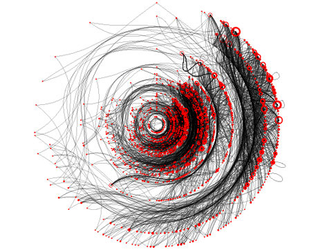
08.10.2007 09:01
AIS Class B not until October?
Panbo has more info on a Class B transceiver in TH
Class B, & come on FCC! and a guess that it may be a while before
we get Class B AIS units in the U.S.
But they're not, and recently I heard that there will be yet another comment period and even waivers may not happen until October.
08.10.2007 08:58
Yet another "what is AIS" article
GlobalSecurity.com has an Automatic Identification System (AIS) article.
AIS is a shipboard radar display, with overlaid electronic chart data, that includes a mark for every significant ship within radio range, each as desired with a velocity vector (indicating speed and heading). Each ship "mark" could reflect the actual size of the ship, with position to GPS or differential GPS accuracy. By "clicking" on a ship mark, one can learn the ship name, course and speed, classification, call sign, registration number, MMSI, and other information. Maneuvering information, closest point of approach (CPA), time to closest point of approach (TCPA) and other navigation information, more accurate and more timely than information available from an automatic radar plotting aid, can also be available. Display information previously available only to modern Vessel Traffic Service operations centers is now be available to every AIS-equipped ship. ...Nothing special, but it is a quick read.
08.10.2007 08:53
AIS Satellite tracking
the gcaptain site has more info on AIS from Satellites: AIS Satellites For Global Ship Tracking
I didn't know about TACSAT-2: COAST GUARD LOOKS TO SPACE FOR MARITIME AWARENESS
I didn't know about TACSAT-2: COAST GUARD LOOKS TO SPACE FOR MARITIME AWARENESS
Studies conducted at Johns Hopkins University in 2003 indicated this concept was feasible, but it was not proven until a Dec. 16, 2006, launch by the Department of Defense of the TACSAT-2 satellite, which was equipped with an automatic identification receiver.
The Coast Guard's ORBCOMM satellite is scheduled to launch in the second quarter of 2007, and ORBCOMM has announced plans to include automatic identification system receivers in future communications satellites.
In another effort, the University of Miami's Center for Southeastern Tropical Advanced Remote Sensing, using a concept of operations developed by the Coast Guard, led a successful multi-organization experiment in late Sept. 2006 to develop and refine maritime domain awareness concepts and capabilities. Using seven civilian satellites, the Center was able to detect and track vessels transiting from the eastern Mediterranean to the coast of the United States.
08.08.2007 15:34
TSS in ASCII art
I plotted up the number of ships of one type through the traffic
separation scheme (TSS) in my study area. It is neat how you can see
the two lanes of traffic that run horizontally with a slight slope
down to the right. Look for the regions will cell count greater than
100.
AIS ASCII art:
AIS ASCII art:
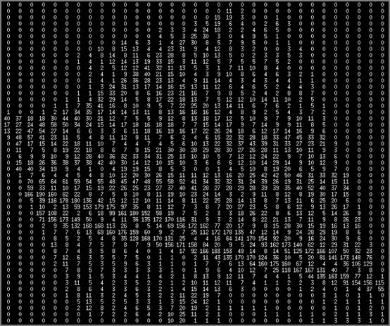
08.08.2007 12:51
Gridding AIS data with ship catagories (gnuplot)
First an aside. I happened to catch a few minutes of CNN in a coffee
shop. There was a guy talking about the earthquake near Jakarta. For
is basemap he was using Google Earth Pro with a USGS layer for the
quake and then he had a graph of tides where he was saying something
about Tsunamis (which I could not hear over the coffee shop noise).
The interesting part to me is that the graph was clearly created by
gnuplot. Gnuplot made CNN. You probably don't agree, but I think
that is pretty awesome!
Now on to AIS data and gnuplot...
I am not there yet on the visualization end of things, but here is a quick look from gnuplot. There are three surfaces in the plot. The red is the base grid showing the level of no ships present. The cyan and blue are two difference categories of ships from within this list: ./ais_pg_grid2.py -d my_ais_2006 --basename='passenger' --category=2
Then in gnuplot, turn on the gridding and hidden surface removal. I set the
grid size to be what my region happens to be.
./ais_pg_grid2.py -d my_ais_2006 --basename='passenger' --category=2
Then in gnuplot, turn on the gridding and hidden surface removal. I set the
grid size to be what my region happens to be.
Now on to AIS data and gnuplot...
I am not there yet on the visualization end of things, but here is a quick look from gnuplot. There are three surfaces in the plot. The red is the base grid showing the level of no ships present. The cyan and blue are two difference categories of ships from within this list:
categories={
0: 'cargo_container'
,1: 'fishing'
,2: 'passenger'
,3: 'service_research'
,4: 'tanker'
,5: 'tug'
}
The command to use in the upcoming noaadata release is something like
the following command. Do not forget to add the region and step size
or you will default to one of my study areas
./ais_pg_grid2.py -d my_ais_2006 --basename='passenger' --category=2
Then in gnuplot, turn on the gridding and hidden surface removal. I set the
grid size to be what my region happens to be.
set dgrid3d 37,54 set hidden3d splot 'redbaselevel-grd.dat' with l, 'sometype-cells.dat', 'another-cells.dat'The resulting image looks something like this picture.
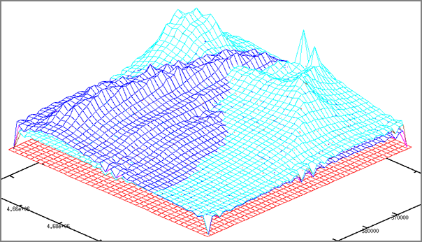
08.07.2007 23:10
YouTube ranking for phoenix launch sim
My posting of the YouTube video by SSV of the Phoenix Mars Lander
simulated launch made it to the "96th - Most Lined (This Week) -
Travel & Places".
So far the stats:
So far the stats:
Views: 597 (probably about 20 by me) Comments: 5 Favorited: 2 times Honors 1 (see below) Links: 5 (2 by me)Please link to this youtube video, comment on what you think, and rate it. The buzz for the launch will be rapidly falling this week for the Launch that occurred last Saturday morning. The next ORT is in Sept/Oct and landing is not until May.
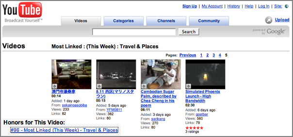
08.07.2007 19:07
AIS track gridding
I think I finally have AIS ship track gridding working enough for it
to see the light of day. I got in trouble with a number of corner
cases and speed optimizations, but now that I have extensive unit
tests for the grid.py file, it should be okay. Here is a little
teaser of 30 ship tracks through an area.
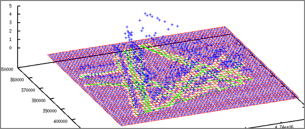
08.06.2007 21:02
10m dem coverage for the us from the usgs
Nick F. pointed me to this site today. It's only partial coverage at
the highest resolution and the web interface is clunky, but there is
some good lookin data on the site.
http://seamless.usgs.gov/ - "Seamless Data Distribution System, Earth Resources Observation and Science (EROS)"
Apparently this has been around for a while, but I didn't know about it.
http://seamless.usgs.gov/ - "Seamless Data Distribution System, Earth Resources Observation and Science (EROS)"
Apparently this has been around for a while, but I didn't know about it.
08.06.2007 20:54
gmt-doc is broken in fink
As JJ pointed out to me, gmt-doc is broke. If it is installed then
you can't update gmt. I'll hopefully get to fixing that soon, but
I've got some code to get done tonight. For now:
fink remove gmt-doc fink install gmtI've also added a tweak to fink to bring it up to the right revision, but gmt-doc.info should really be a splitoff from gmt.info with that file.
08.06.2007 20:06
Using numpy to make image files with PIL
This short article sounds like a great trick to write out images. I
am not far away from having to do some large image writing myself.
http://jehiah.cz/archive/creating-images-with-numpy by Jehiah Czebotar.
http://jehiah.cz/archive/creating-images-with-numpy by Jehiah Czebotar.
08.05.2007 18:04
gnuplot gridding
This is my first time using gnuplot to generate grids. This is great stuff!
First, my test data set (4.dat):
0.500000 0.500000 2.000000 0.500000 1.500000 1.000000 0.500000 2.500000 1.000000 0.500000 3.500000 1.000000 1.500000 0.500000 1.000000 1.500000 1.500000 0.000000 1.500000 2.500000 0.000000 1.500000 3.500000 1.000000 2.500000 0.500000 1.000000 2.500000 1.500000 0.000000 2.500000 2.500000 0.000000 2.500000 3.500000 1.000000 3.500000 0.500000 1.000000 3.500000 1.500000 1.000000 3.500000 2.500000 1.000000 3.500000 3.500000 1.000000Then the gnuplot commands:
set term x11 set dgrid3d 5,5,1 splot '4-grid.dat' with l, '4.dat' set ticslevel 0.5 set view 60,30 set autoscale set parametric set style data points splot '4.dat' set style data lines splot '4.dat'
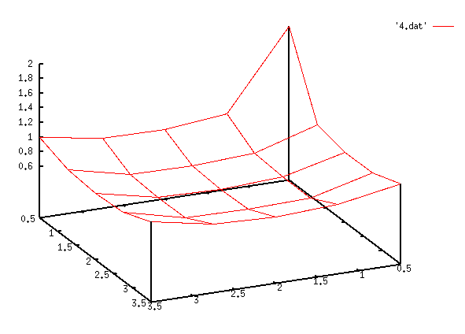
08.04.2007 09:38
Struggling with eclipse
I am trying again to work with Eclipse. There is much to like, but things
that are currently giving me trouble:
- I seem to be using the mouse all the time. Not good for the body. I miss my emacs keyboard motion commands. Ctrl-A and Ctrl-E guys?"
- The white background. Ouch. Why so bright? I feel like I might get a sunburn. How can I pick a more mellow color scheme? I use a black background in emacs.
- How do I do a diff before commit back to svn? The team drop down for a file is a bit confusing. "History" is clearly not the answer.
- Is there a keystroke for "run how I just did before"? If I just did a unittest on a file, how can I repeat that even if I am in some other file at the moment?
- Now this one is driving me batty. I have two very large monitors in front of me. How do I put up a different source file on the other monitor? Tabs are great, but dragging the whole eclipse UI across screens does not show the other tabs and how wide do I really want one source file to be? With Emacs, 4 or five full screen columns of code can nicely fit on one monitor and I can layout frames however I want.
- What is the keystroke to switch editor tabs?
- I setup pylint, so how do I get at the output of it?
- How about Apple +/- to make the font bigger/smaller?
- Grr... the pydev extensions are partially free and partially for pay. I know it is the author's right to do this, but it makes me less inclined to stick with eclipse.
08.04.2007 08:18
Phoenix launch successful
Phoenix is now on its way to Mars!
Leaving the tower:
Solid rocket separation:
Leaving the tower:
Solid rocket separation:
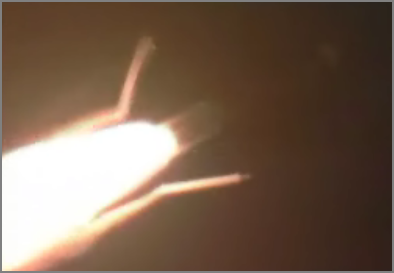
08.03.2007 21:20
mbsystem on intel macs with fink
I just committed the fink package that provides mbsystem on both ppc
and intel macs. Please give it a try if you use mbsystem on intel
macs and let me know if there are any problems.
T minus 8 hours phx launch...
T minus 8 hours phx launch...
08.03.2007 20:41
Mandatory JPL deer photo
I imagine that most new JPLers end up taking a picture of the
legendary on-lab deer. Yesterday, I ended up about 4 feet from an
adult trying to get to work along one of the narrow walk ways. There
was just a waist high railing between me and the doe with her fawn.
They hardly notice people on lab. This evening as I was taking
pictures, a guy came out of the building and actually waved and said
high to a deer that was right out side of the door he came out
Here is my manditory deer photo:
Here is my manditory deer photo:
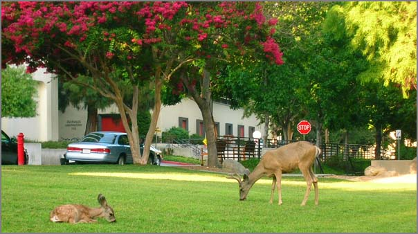
08.03.2007 19:36
mbsystem byte swapping
With a little help from RangerRick over on #fink, I have a quick way
to set the byteswapping for mbsystem. I am about to put something
based on the cpp method into the fink package so that mbsystem will
work on intel macs too.
#!/bin/bash -e
# dangerous first thought
if [ `uname -m` == i386 ] ; then
echo yes
perl -pi -e 's|\$BYTESWAPPED = \"NO\"\;|\$BYTESWAPPED = \"YES\"\;|g' install_makefiles
else
echo no
fi
#
# better way
#
cpp -dM /dev/null | grep __LITTLE_ENDIAN__
if [ $? == 0 ] ; then
echo yes... need to byte swap based on cpp
perl -pi -e 's|\$BYTESWAPPED = \"NO\"\;|\$BYTESWAPPED = \"YES\"\;|g' install_makefiles
else
echo no need to byte swap based on cpp
fi
I covered this cpp trick early last year, but RangerRick pointed out
that /dev/null can be used instead of a real input file. No fuss, no
mess.
08.03.2007 18:10
Phoenix launch in less than 12 hours
The Phoenix Mars lander is just about to launch... the clock on the web page has the countdown
at 11 hours and 15 minutes.
Wired has an article today on Phoenix: $400 Million Mars Lander to Launch on Saturday
Image credit might be Corby Waste, but wired was not to clear about this.
Wired has an article today on Phoenix: $400 Million Mars Lander to Launch on Saturday
Image credit might be Corby Waste, but wired was not to clear about this.
08.03.2007 17:54
gmt 4.2.0 now in fink
I've pushed the gmt 4.2.0 package from Remko into fink. I had tried
the package a while back and had seen some strange problems. In
rebuilding and testing the package, I can't find those problems, so it
is now committed to the fink cvs free. Rsync users should see the
update shortly.